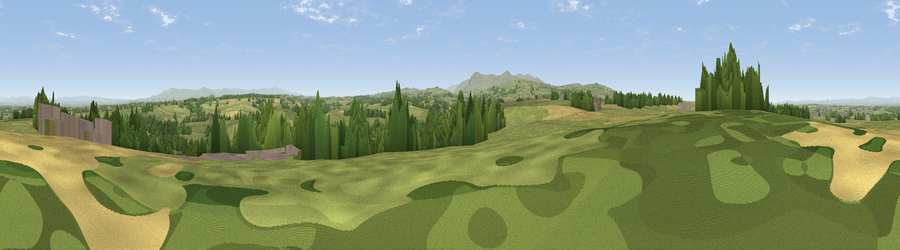

Viewpoint near Gaitsgill
#12406 in England · top 60% of its area beats it · near Gaitsgill · access?Where it is
The exact computed spot (NY 36625 46325). Click the marker for map links.
Public access: no public right of way or access land is recorded at this exact spot — it may be on private land. Computed from Natural England's CRoW access layer and OpenStreetMap rights of way — not the legal definitive map. Always verify locally.
The view, rendered

A 360° render of this exact spot computed from the terrain model, tree cover and land cover — summer colours, afternoon light, calibrated against photographs of famous viewpoints. Real trees, hedges and buildings will differ in detail.
The panorama
Grey silhouette: terrain skyline in each direction (720 bearings, Earth curvature and refraction included). Dashed green: skyline with trees (+15 m) and buildings (+8 m) as obstacles. Blue strip: how far the ground is visible on each bearing.
Where the view opens
Wedge length = distance to the farthest visible ground on that bearing (vegetation-aware). Rings at 10, 25 and 50 km.
What fills the view
71% grassland · 15% woodland · 12% cropland ·
Angular shares of the visible panorama (visual magnitude), not map area. Landscape diversity 0.36 (0–1 Shannon).
Key numbers
More beautiful places nearby
The staircase of upgrades: each row has a higher view potential than everything closer. Driving times are estimates from straight-line distance, calibrated against real road routing — check an actual route before setting out.
| Place | Direction | Drive | Score |
|---|---|---|---|
| Viewpoint near Sebergham | SSW · 6 km | ~12 min | 65.7 |
| Warnell Fell | SSW · 6 km | ~13 min | 72.1 |
| Viewpoint near Caldbeck | SW · 9 km | ~17 min | 72.2 |
| Barrock Fell | E · 10 km | ~20 min | 81.1 |
| Blencathra | SSW · 19 km | ~33 min | 81.7 |
| Viewpoint near Bassenthwaite | SSW · 19 km | ~33 min | 82.8 |
| Skiddaw South Top | SSW · 20 km | ~34 min | 85.8 |
| Ullock Pike | SW · 21 km | ~36 min | 89.4 |
54.80777, -2.98752 · source: screening · position refined by local search. Computed location — check access rights before visiting.